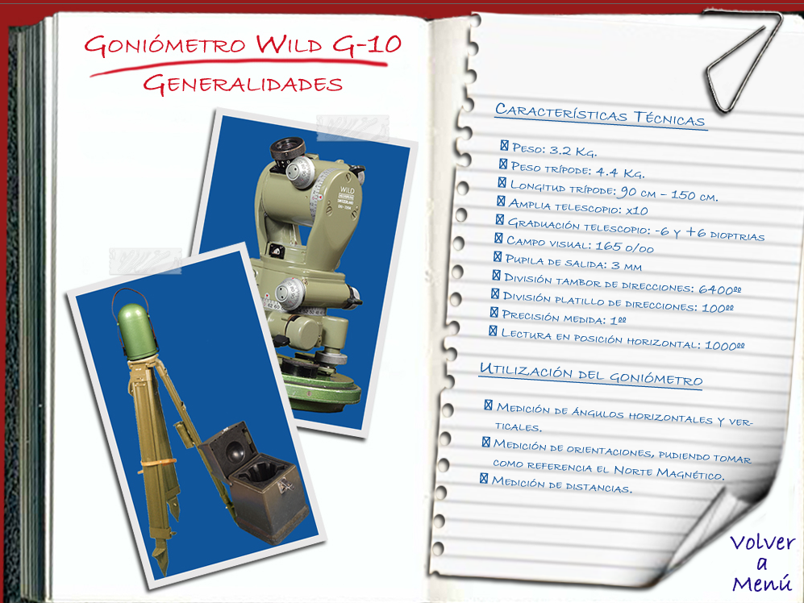
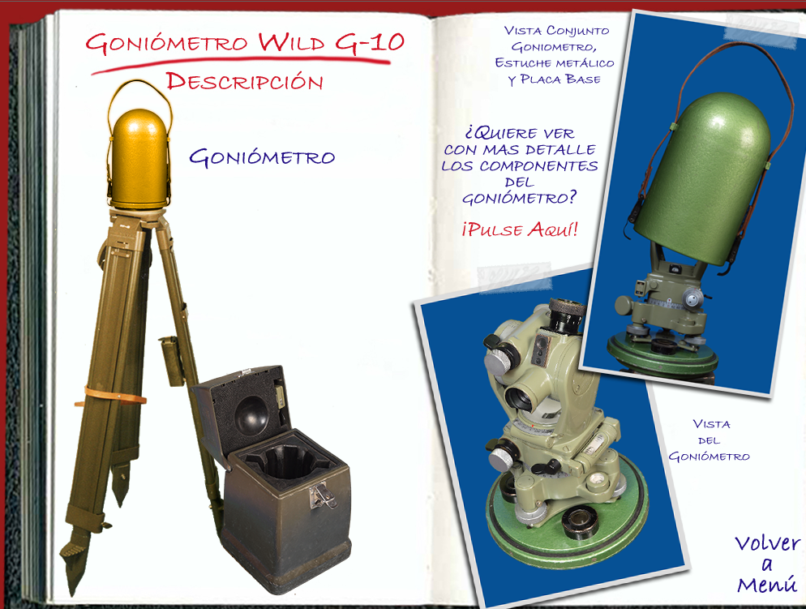
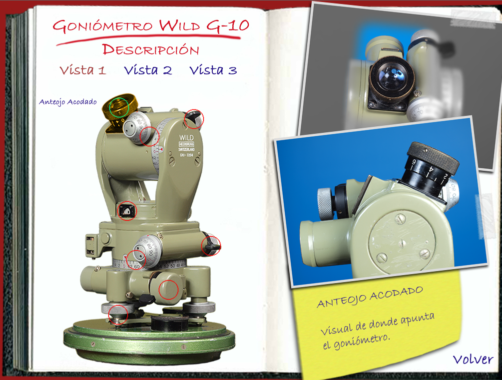
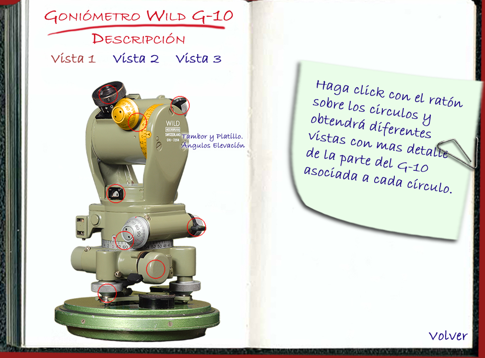
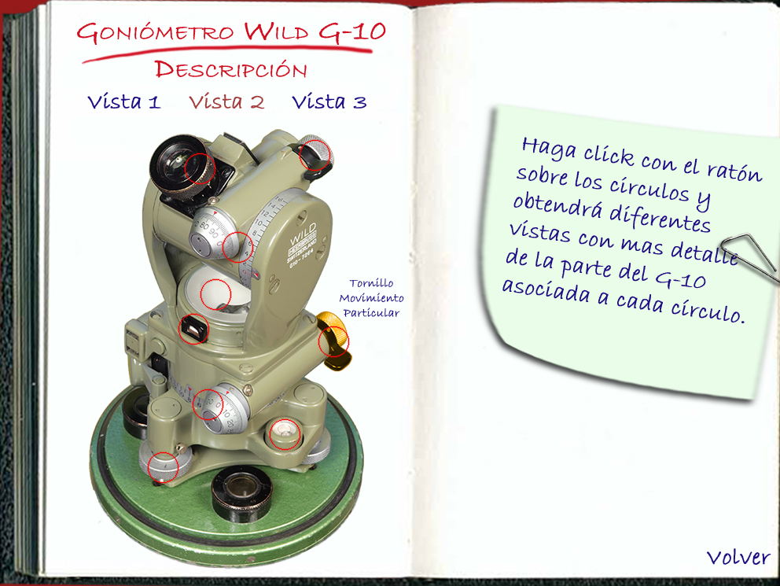
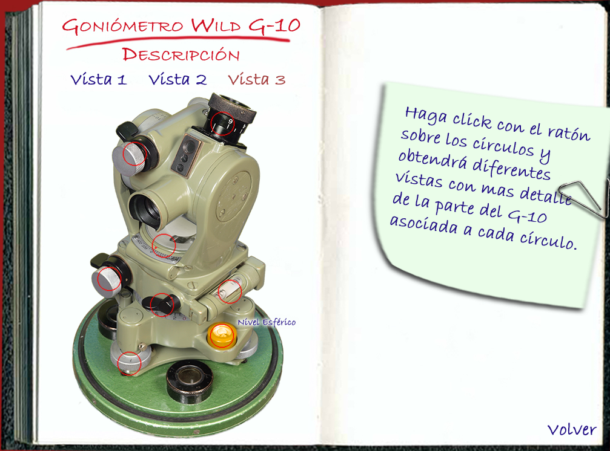

Imagen original de referencia

Academia de Artillería
Consulte las características del G-10, identifique sus componentes y repase la puesta en estación mediante los vídeos originales.

Información básica del instrumento, presentada con un diseño más limpio.

Medición de ángulos horizontales y verticales, determinación de orientaciones y apoyo a la medición de distancias.
Goniómetro, trípode, estuche de transporte y placa base.
Seleccione un componente. La imagen original se muestra como referencia y la explicación aparece en una ficha separada.
Observación

Las indicaciones «pulse aquí» pertenecen al recurso antiguo. En esta versión utilice únicamente los controles de la web.
Sirven para ubicar visualmente los componentes antes de consultar cada ficha.



Comparación entre el procedimiento con el nivel corregido y el caso descorregido.
Sitúe el nivel paralelo al plano vertical que contiene dos tornillos nivelantes.
Accione ambos tornillos en sentido contrario hasta centrar la burbuja.
Gire el instrumento alrededor del eje principal.
Centre la burbuja con el tercer tornillo y compruebe la estabilidad.
Secuencia de nivelación con el instrumento correctamente ajustado.
Vídeo original integrado en una interfaz actual.
La lupa permite observar la brújula integrada y comprobar su posición durante la orientación magnética.
La parte interactiva de dirección y elevación queda reservada para una segunda fase.
Pendiente de desarrollo